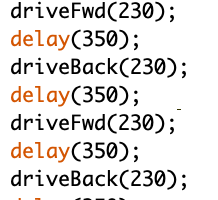
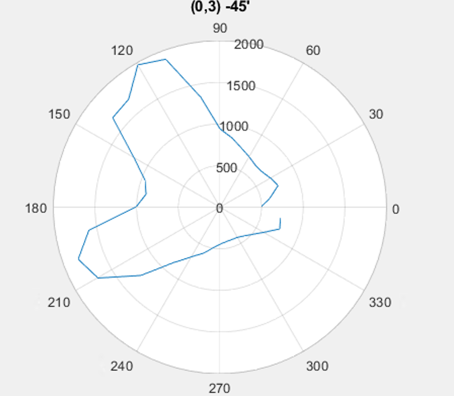
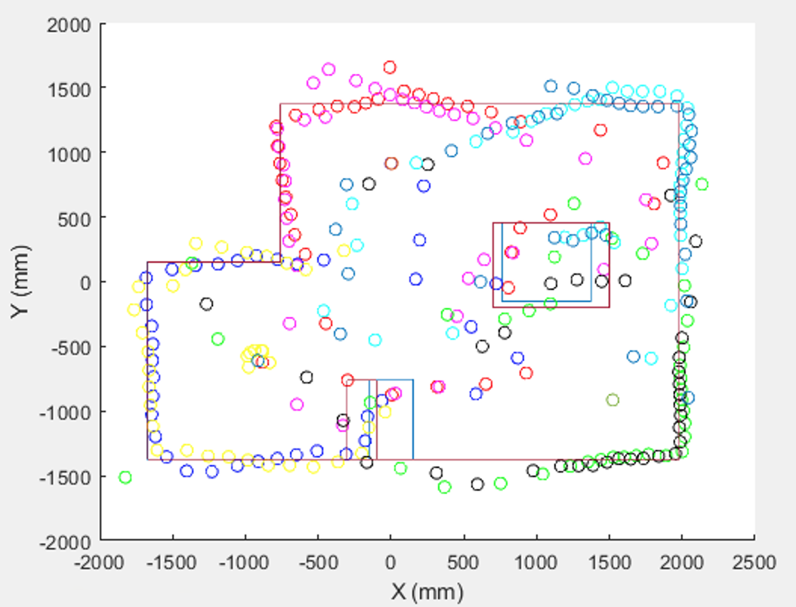
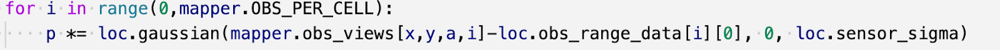

ECE4960 | FAST ROBOTS
Robby Huang | ECE 2022
Robby Huang | ECE 2022


The purpose of this lab is to help us set up IDE and run some simple scripts on the Artemis board. By running blink, serial communication, analog read of the temperature sensor, and frequency measurement by the Pulse Density Microphone, I was familiarized with the basic features of the board.
In this first demo, I blinked the board. To successfully compile the script on my Mac I need to upgrade my Arduino IDE from 1.8.9 and decrease the SVL baud rate to 115200 bits per second.
In the second example, I ran the example code on serial communication. Since we are only using the serial communication on the Type-C cable and the example code printed out messages on both UART channels, I modified the code so that everything printed out from the USB one. The Serial.print() function will allow you to send out information over UART. The video demonstrates both input and output with UART.
In the third demo, I ran the analogRead example code and visualized the gradual temperature change on the temperature sensor caused by touching the chip on the serial monitor. Reading the analog value on an analog pin can be accomplished by calling the analogRead() function.
The fourth demo showed the display of the highest frequency heard by the microphone on the board. After I ran the MicrophoneOutput example code, the highest frequency of the surrounding sound was displayed on the serial monitor. In the code, it first converts the PDM samples to floats in this line
g_fPDMTimeDomain[2 * i] = pi16PDMData[i] / 1.0;
and then perform FFT with the arm_cfft_f32 function. Lastly, it finds the frequency bin with the largest magnitude and prints it on the serial monitor. As I whistled in higher and higher frequencies, the number displayed on the serial monitor increased.
In the last demo, I slightly modified the microphoneOutput example. By using and if/else conditional statement with the variable ui32MaxIndex.
Code snippet that I added:

As you can see in the video, the on board led blinked when I whistled.
The objective of this lab is to establish Bluetooth communication between the Artemis and the computer. We need to implement Arduino code on the Artemis side and Python in Jupyter Notebook on the computer. The purpose of this is to offload computation to the computer later when we are performing computationally intensive tasks on the robot.
Setup
The first step was to set up the environment on the computer side. I initially tried to install Jupyter Lab on my Mac computer. However, since my Mac was still running MacOs 10, Jupyter Lab failed to open.

I eventually switched to Ubuntu 20.02 and successfully ran Jupyter Server in my virtual environment.
The MCU setup was much easier. We just need to install the ArduinoBLE library and upload ble_arduino.ino to the Artemis board. If uploaded successfully, we should be able to see the MAC address of the board on Serial Monitor.
Bluetooth Connection
To establish the connection between the Artemis board and the computer with BLE, I matched the MAC address defined in connection.yaml to the one on Arduino serial monitor. This message should be displayed when the connection is established.

Demo
With the help of the demo code, I performed the following tasks: receiving float and string using receive_float() and receive_string() functions, sending commands, and disconnecting. Here is a short video running the tasks in the demo code.
Tasks
Before I demonstrate my tasks, I need to run the script to import necessary modules and run the connect command.
TASK ONE:
The first task is to send an ECHO command with a string input that will trigger the Artemis board to return an augmented string to the computer. On the Artemis side, commands are handled by the switch/case statement. In the ECHO case, I first initialized a char array and then use the get value function to extract the string from the command string. After obtaining the input string, the next step is to augment the array and send it back to the computer. First I emptied the contents of the tx_estring_value, then use append() function to augment it. Lastly, I send the augmented string out with the writeValue commend. For debugging purposes, I also print it on the serial monitor.

In my code, I augmented my message with “My boss said:”, so the board would repeat my message while referring me as his boss. In this demo video, I sent the commend using send_commend(CMD.ECHO, “hi”) and I got "My boss said: hi” from the board.
TASK TWO:
Sending three floats is very similar to the example SEND_TWO_INTS. I first declared three float variables and then used get_next_value(float) function to write the three floats to the variables. On the computer side, I sent three floats 1.2, 3.42, and -21.32 to cover test cases with different decimal places and different signs.

TASK THREE:
The notify mechanism in BLE will trigger the handler (or callback function) when data is changed. It is similar to an interrupt and an ISR. The only thing we need to do on the Arduino side is to define a UUID associated with a float. In this case, I am using the declared tx_characteristic_float, which increments 0.5 every half a second.
On the computer side, I called the start_notify(uuid, handler) function. It was quite confusing for me that the handler requires two parameters, yet the notify function only takes uuid and the handler itself as inputs. I later discovered that we could declare an input for the handler function outside the scope of the function. I used read(uuid) function to read the input byte array and store it in variable inputf as the second input of the handler function. The handler function then basically converted the byte array into float and store it in a global variable. The global variable will keep updating unless the function stop_notify(uuid) is called.

Remember to disconnect.
TASK FOUR:
The two approaches can all successfully deliver a float with the same accuracy. When sending numbers one by one, both approaches have identical speeds. The benefit of using receive_float() is that, it is more direct and does not require data type conversion. This approach is ideal for debugging but expensive computationally. If we send a large number of data quickly, it is more memory efficient and faster to combine sensor readings into a single BLECStringCharactersitic on the Arduino side and unpacked it when it reached the computer side. This would be useful when we need to stream, for example, accelerometer readings rapidly when the robot is moving fast. We need to be aware of the max message size (150 byte) when implementing this.
Objective
The purpose of this lab is to let us familiarize ourselves with TOF and IMU, the two important sensors that we will equip on the robot. We should first understand the sensor so that we can use it to collect useful data such as the distance of obstacles and pitch, roll, and yaw. Furthermore, we should learn the limit and constrain of our sensors such as sample rate, noise, range, and accuracy.
Time-of-Flight Sensor
Wiring

1. I ran the I2C example script to scan I2C addresses for the sensors. When I turned both of them on, the serial window displayed all the I2C addresses. When I turned one of them off, I found address 0x29. This is expected according to the Sparkfun page for this sensor.
2. The ToF sensor has three distance modes. Short distance mode is more immune to ambient light, but its maximum ranging distance is limited to 1.3m, compared to 4m of the long distance mode. Meanwhile, long distance mode allows the longest possible ranging distance but is easier to be impacted by ambient light. Different distance modes also affect the timing budget. In short distance mode, 20ms is the minimum timing budge and 140ms is the timing budget allows for the long distance mode. Increasing the timing budget increases the average power consumption and can improve the repeatability error. On the final robot, both modes would be helpful. We could use one mode for each TOF sensor and perform sensor fusion. Given the size of the robot, we are probably going to operate at short or short/mid range mode. If the map can extend up to 4 meters, we would have to use long distance mode even though the resolution may decrease.
3. I examined the sensor range, accuracy, repeatability, and ranging time. I also tried to compare sensor reading with different light conditions and surface textures. I used a 1.3-meter tape measure to measure the distance of a flat surface from the TOF sensor mounted vertically. All testing data below are based on the average of 100 sample points per measurement.

In short distance mode, the sensor has a range between 30mm to 1250 with less than 10% of error. The accuracy was consistently high until it reaches more than 800mm, at which the percentage error starts increasing linearly.

The standard deviation of 100 sample points at each distance can tell us how steady the measurement is at that distance. Similar to the accuracy curve, the consistency of measurement decreases beginning at the 800mm point exponentially.

In this chart, I compared the TOF collecting data in different environments and from different surfaces. We can see that less ambient light will make the data more accurate and consistent and different surface textures correspond to different accuracy because it deflects light a bit differently.
The standard deviation of 100 sample points at each distance can tell us how steady the measurement is at that distance. Similar to the accuracy curve, the consistency of measurement decreases beginning at the 800mm point exponentially.
I also try to print out the ranging time of the sensor. The time between when startRanging() is called to when stopRanging() is called does not change linearly with the obstacle distance. If the obstacle is in range, the ranging time is about 52144 microseconds and if the obstacle is out of range, the ranging time is 32064.
I accomplished daisy chaining the two TOF sensors by manually toggling the XSHUT pins with GPIOs at appropriate times. I first turned all the sensors off by pulling their XSHUT pins LOW and then turning them on one at a time while setting the I2C address of the first one to prevent address conflict. To ensure this process is successful, I printed out the output of distanceSensor1.getI2CAddress() to see the new address and using this logic:
if (distanceSensor1.getI2CAddress() !=distanceSensor2.getI2CAddress()) {
Serial.println("No conflicts!");
}
to ensure that the addresses are not conflicting.
Demo video for two TOF sensors working at the same time：
Inertial Measurement Unit
After I wired the IMU to the Artemis board I scan the I2C channel to find the sensor’s address. I found 0x68, which is expected because the datasheet indicated that the I2C address for this sensor is either 1101000 or 1101001 in binary depending on the AD0 value. To run Example1_Basics.ino, we need to change the AD0_VAL to 0 since from the datasheet we learned that address 0x68(1101000) corresponds to AD0 = 0.
I am able to see both scaled and raw accelerometer and gyroscope data when running the example code. I plotted them out on the serial plotter so that I can visualize them. In the accelerator plot, we can see some noisy acceleration data in X, Y, and Z directions. Depending on the orientation of the sensor, some acceleration is always detected when the sensor is stationary due to gravity.

The gyroscope measures the angular velocity. Its plot looks noisy and it is very sensitive to changes in velocity without any filtering.
Accelerator
Pitch and roll are calculated by these lines of code:
pitch = 180 * atan2(myICM.accX(),myICM.accZ())/M_PI;
roll = 180 * atan2(myICM.accY(),myICM.accZ())/M_PI;
We cannot calculate the yaw value with accelerometer data because we can’t use gravity as a reference acceleration in the XY plane.
In this demo video, I am showing the output at {-90, 0, 90} degrees pitch and roll. The output is relatively accurate
The next step is calibration. I measured pitch and roll to have the range of pitch[-89,89], Roll [-88,85], which means it has an accuracy of >95%. To calibrate it, I used the map function. For example, to map pitch to [-90,90]: pitch = map(pitch, -89, 89, -88, 85);
Gyroscope
In order to find the frequency of the unwanted noise in the output signal, we need to perform Fast Fourier Transform on the dataset. I set a timer in the code to make it stop collecting data after 10 seconds so that the data length is known and consistent. My dataset has a length of 288 and a sampling period of 3.3150e-2s. I exported the data and performed FFT in Matlab.

I performed FFT on a noisy dataset, which I collected while tapping the sensor, and a dataset with limited noise to distinguish the noise frequency buckets in the frequency spectrum.
I also did FFT on a regular dataset.

As you can see, the useful data are mostly at less than 1Hz. If fc = 1, RC = 0.159. Since alpha = T/(T+RC) and T = 0.03315s, alpha = 0.03315/(0.03315+0.159) = 0.1725. With this alpha, I am able to achieve a plot with less noise:
We can tell the alpha value is appropriate because the readings react to changes in a short enough time, so the time constant is not too big.
Gyroscope
Gyroscope provides us the angular velocity of the sensor. We can simply multiply the velocity with the dt between the sampling intervals to find the angular displacement. We can find dt with the help of a variable and the micros() function:
dt = (micros() - last_time) /1000000;
last_time = micros();
and calculate roll, pitch and yaw with:
roll_g = roll_g + myICM.gyrX() * dt;
pitch_g = pitch_g - myICM.gyrY() * dt;
yaw_g = yaw_g + myICM.gyrZ() * dt;
The sign between the two terms could change depending on the sensor orientation.
This serial plot is plotting the angle displacement output calculated from the accelerometer and gyroscope without any filter. One can see that the output calculated from the accelerometer is much noisier than the one from the gyroscope.

We can do a more direct comparison between the filtered data by accelerometer and gyroscope.
Although the data synchronized at the beginning of the demo, there are a few distinguishing differences between them. 1. Gyroscope data rely on the initial condition, but accelerometer does not. 2. Though the gyroscope is less noisy, its data are likely to drift, especially after some rapid changes in data. Meanwhile, accelerometer data will not drift since it uses gravity as the reference. 3. Data from the gyroscope can go above 90degree and the accelerometer’s data has a range between [-90,90].
I tried decreasing the sampling frequency of the system. Obviously, data will be displayed at a slower rate. More importantly, the increase in sampling interval introduced more noise and inaccuracies in approximating the angular displacement. Thus, the data is more likely to drift.
Since both sensors have pros and cons, we can use a complementary filter to produce a final data output with less noise and high accuracy. Here, we need to double-check the sign of the myICM.gyrY() term. Since the frequency of potential noises is similar to the one we found, we could just use the same alpha value.
pitch = (pitch - myICM.gyrY()*dt) * (1-alpha) + pitch_a * alpha;
roll = (roll + myICM.gyrX()*dt) * (1-alpha) + roll_a * alpha;
In this plot, the red line is data from the gyroscope, the blue curve is the low pass accelerator data, and the green one is from the output of the complementary filter. The red curve is drifted and the blue curve is a bit noisier than the green one.
In this final demo video, I demonstrated the IMU getting accurate pitch and roll in the full range with relatively low noise. The yaw value (the green line), is only computed from the gyroscope data, so it is subject to drifting.
Similar to the TOF sensor’s different operation modes, we can select the DPS(degree per second) of the IMU. When we are performing tasks such as high-speed drifting, we should increase the DPS setting to at least 1000 to achieve accurate yaw of the robot. When we are performing PID turning in small increment angles, we should decrease DPS to 250 so that the sensor resolution is enhanced.
System-Level Wiring and Placement
Since all the sensors can communicate in I2C, we simply daisy chain them all together and access to them with their unique addresses. We need to connect a GPIO from the Artemis to toggle the XSHUT pin on TOF2 since it has the same address as TOF1. Therefore, we need to follow the sequence described above to reset its address. I2C communication allows simply wiring while cascading on multiple slave devices.
I decided to place the IMU in the front platform, one TOF in the front, and the other on the side. IMU needs to be placed parallel to the ground with a firm and stable platform. Therefore, I cut half of the battery case on the car so that it can use the plastic platform there. It is also an ideal location for the IMU since it is the furthest away from the motors. Motor EM waves add a lot of noise to the accelerometer readings. TOF1 and TOF2 are placed on vertical and open surfaces so that they can be mounted securely while providing more data points to localize the car in future labs.
Objective
After learning about sensors in our previous lab, we learnt about the potential and limitations of our car in this lab. With the help of the remote control and IMU, my partner (Jack Defay) and I designed a series of tests to explore the ability of the RC car.
Testing Method
While most of the tests relied on basic lab equipment such as rulers, scales, and stopwatches, we used Bluetooth to stream data from IMU during our test runs to obtain more interesting and informative data.
To establish such a connection, we used the tx_estring_value.append(float value) function and tx_characteristic_string.writeValue(tx_estring_value.c_str()) function to update the BLE_TX_STRING with uuid “f235a225-6735-4d73-94cb-ee5dfce9ba83”. On the Python side, we called the start_notify function to access that uuid and stream the changed data. We packaged all the float data into a string and update it at each cycle so the data is well-formatted and more memory efficient. Such connection enabled us to test the robot untethered while keeping all the sensor values well documented.
Since gyroscope reading tends to drift a lot while we are transferring the robot before testing, I made this ZEROGYRO commend so that we can zero the initial condition before each test to obtain cleaner test results.

Dimension
I used rulers and calipers to obtain accurate measurements for the car. Dimensions are important in robotics since it defines the local frame of the robot and directly affects the robot’s dynamics. Dimensions are shown in this picture in millimeters.
Weight
I used a scale to measure the weight of the robot and the weights of its battery.

Battery
To understand the battery and the power consumption of car better, I did an unloaded discharged test. I used the 650mAh 1S Lipo battery that comes with the car and run the car unloaded continuously.

I obtained this discharge curve, which is a quite normal Lipo discharge curve. The car requires 3V minimal to run. A 3V battery typically corresponds to 10% SoC(state of charge). If we hang the car up with wheels off the ground, we get about 20 minutes of run time. I already tried to power the car with a DC power supply, but it doesn’t seem to be working due to the high ripple in the current drain.
Turning Resolution
We wanted to figure out the turning resolution of the robot with remote control and IMU sensor so that we can better control the robot’s turning motion in the future. With gyroscope data (plotted below), we are able to see how much the robot turns when we press the button on the remote as short as possible.

After using all the data and calculating the delta yaw at each turn, I found that the minimum turning with the remote control is about 40 degrees.
Ground Flipping
In this task, we would like to find out the minimum runup distance require to flip the RC car. To visualize the flipping motion, we plot the gyroscope data out during the run-up and flipping process.
As you can see, the robot performed a 360 flip here. The steps behind the flipping motion involve 1. The car to
The steps behind the flipping motion involve 1. The car ramps up to a certain speed. 2. The car breaks and the back of the car will be lifted up due to inertia. 3. The front wheel starts to spin in a reverse direction, while the back of the car keeps going to the front in the air. 4. Finish flipping. Given this process, the most important parameter would be the lowest initial speed. We characterized this by starting the car from a full stop and calculating the minimal distance to flip. We took videos to check the run-up distance at the frame that the car starts to flip and we obtained the following data.
From the data from the 18 trials, 15 of them succeeded while 3 of them failed. We can see that 3 feet should be adequate for the robot to run up and flip.
Testing video:
Ramp-Up Time
From observation, we concluded that the car ramps up to its highest speed in roughly 10 feet. We took multiple videos and calculated the time difference between the frame that the car started and the frame that the car crossed the 10 feet line. The data showed that the car took an average of 1.24 seconds to ramp up. The data has a small standard deviation of 1.108, so it is consistent.
Testing video:
Bi-Pedal Motion
During testing, we discovered this interesting motion of the car that happens when the car is sideway. When we oscillate between the two turning directions quickly, the car will achieve fish-like locomotion.
With the help of the IMU, we are able to track the pitch of the car when performing such a motion.
Each movement can be further broken down into left commend, right commend, and left commend. We characterized this motion but counting the direction of the left and right spinning of the motor. We compared the good runs (red curves) and bad runs (blue curves) in the curves below and found the optimal range for motor spinning duraction to be around 0.3 seconds. Later when we are controlling the robot with PWM signals, we can ensure such duraction when it is doing the bipedal movement.

Objective
In this lab, we start to run the car with our own control circuits and algorithm. With our own control system, we can control the exact speed and duration of each motor. This will set a solid foundation for closed-loop control and, more importantly, allow us to replicate the stunts we characterized later.
Wiring
Wiring is a crucial part of the lab. A clean, neat, and secure wiring will allow us to have a smooth testing process and obtain data without much noise. First of all, I took the car apart and cleaned the original circuitry out. There are a few requirements I hope to meet with the placement of all the components:
1. All components need to be securely mounted and in a position with enough space.
2. IMU should stay away from the DC motors so the accelerometer is less disrupted by the motor EMI noise.
3. Components with a lot of connections to each other should stay close together.
Therefore, I decided to place the IMU in the front platform, one TOF in the front and one on the side, two motor drivers in the rear cabin with all the batteries, next to the motors and the Artemis.
There are two h-briges on the DRV8833 IC. To increase the maximum current we can deliver to each motor, we use one driver per motor by parallelling its two channels. This is a creative solution when we do not have a single h-bridge that can handle the amount of current we would like to deliver.
To make debugging hardware easier, I decide to connect different parts of the system securely while making them detachable from each other. Therefore, half of my connection to the boards is soldered and the other half is male/female header connection. Knowing that all GPIO pins on Artemis Nano have PWM capability and saving space, I only put headers between A2-8 pins on the board.
Placement of components:
I used soft wires to wire all the components together and color-coded them with standard conventions: red for 3V3, black for GND, etc. To reduce EMI between sensors and actuators, I twisted all wires with high-frequency signals together so that the overall branch has a net current of zero. I further protected the circuit by using zip ties to lessen the stress on the solder joints. I also cut the wires so that they could all fit on the chassis but not be too tight. I used electrical tape to isolate components from shorting each other during the runs and use Gorilla tape to securely mount the sensors on flat platforms on the robot.
Final layout:
Motor Driver
When we power a system for the first time, it is usually a good idea to power it with a DC power supply. For this implementation, the power supply is acting as a 1S Lipo battery so I set it to 3.7V (the nominal voltage of a 1S Lipo battery) and turn the current limit to 3A since the motor driver allows up to 1.5A per channel. The battery we will end up using is a 25C 850mAh Lipo battery, which can output up to 25C* 0.85Ah = 21.25A. Later we will use two different batteries. One power the Artemis and all the sensors and the other provides power for the DC motors. The first one will probably be drawing current at a milliampere level while the other would go up to more than 5 amps. Since the motor draws a lot of currents and its current draws changes rapidly, it would be a good idea to separate the high power and low power path and their power sources.
I used PWM to control the output level of the motor driver following this chart:
Since all GPIO pins on Artemis have PWM channels, we can simply call analogWrite(pin, level) function to output a PWM from 0-255. Here, I demonstrated my ability to control the PWM duty cycle on pin A2 with a loop that steps the PWM from 0 to 255.
To power one motor, we just need to set one pin connected to the input to LOW and the other to a PWM pulse. For example, analogWrite(A3,0); analogWrite(A2,200);
In the following demo videos, I demonstrated that the wheels can spin in all directions with proper PWM input from the Artemis. I started with one wheel, then started to control both wheels.
I then further characterized the input to these functions, so I know how the PWM will make the car move.
Open Loop Control
This was what happened, when I ran the car on the floor with the battery plugged in. Although I added a timer to stop the movement after two seconds, it was still too moving too fast and not at a straight line.
The functions I created in the previous sections were nice, but keep reprogramming the board is quite annoying. Therefore, I made a separate command for each one of them.
After connecting to Bluetooth with my computer, I can simply run commend like ble.send_command(CMD.FORWARD, "")
and ble.send_command(CMD.CWTURN, "")
To make the car perform certain tasks.

This command will allow the user to input the PWM level of all the motors to set the speed of the car immediately with this line of code in Python.
ble.send_command(CMD.SETSPEED, "255")
Since it is moving to the left when I commanded it to go straight, I tried adding some calibration factor on the left motor to make it go a bit faster than the right one and found that a factor of 1.1 works the best. analogWrite(A2,motorspeed*1.1);
In this demo, the remote control car moves fairly straight. The string under the car is 2 meters long.
With the SETSPEED commend, we can also easily find the minimal PWM duty cycle to make the car move. When the battery is at 4V, the car moves when the PWM level is 49 (which means a duty cycle of 49/255 = 19.2%). This video shows the difference between the car moving forward at 19.2% duty cycle and 18.2% duty cycle. When I ran it with a speed of 48, the car could no longer move forward smoothly.
For the final demo, I showed the car moving with these command sequences over Bluetooth. Turning requires the motor to spin harder so I set the speed to 255 before calling the turning commands. Overall, the robot could received and performed the commands accurately.
Objective
After we performed open-loop control in the previous lab, we are moving forward to closed-loop control. Closed-loop control, especially PID control, is a simple and elegant way to accurately control the robot. This lab allows us to set up the basis for impressive stunts later. We can practice implementing PID control from scratch and implementing it on the physical robot. Doing so is more challenging than tuning PID with equations in a simulator, but it encourages thinking about elements such as noise and sampling speed in a real-life scenario. I choose to implement task B for this lab.
Debugging Framework
First and foremost, we need to set up a user-friendly debugging environment so that we can implement a PID controller more efficiently later. I first allocated memory for a few 500-element arrays. Based on the sample speed of the IMU, 500 data points will take about 5 seconds to be filled, which should be long enough to perform the task. I created the following arrays for debugging or tuning PID.
To send them over in a clean and speedy manner, I decided to make a SENDDATA commend, in which I made a for loop with 500 interactions. In each iteration, I cleared the tx_estring_value and appended all the debugging data on it. Therefore, all the data can be associated with the correct timestamp.
On the Python side, I declared a list “readings” to store all the strings. I called the start_notify function to monitor any changes in the RX_STRING. In the handler, I appended the transferred strings to the list. Once the handler was established, I called the SENDDATA commend. Usually, after about 20 seconds, all the data are transferred and I used a for loop to print out the readings:
for f in readings:
print(f)
The readings are printed out in one row per timestamp format with commas separating different data. I can copy the data and plot them in Google Sheet.
To reduce the number of compilations I need to do, I created two helper commends SETPIDVALUE and SETSETPOINT. I call them in the Python code so I can tune my PID values and change the setpoint quickly.
ble.send_command(CMD.SETPIDVALUE, "4|0|0.5")
ble.send_command(CMD.SETSETPOINT, "0")
On the Arduino side, I used the function from the ble library to update global variables such as Kp, Ki, Kd, and setPoint. For example, to update the Kp value from user input, I used success = robot_cmd.get_next_value(Kp);
Since I used Bluetooth to send commends in lab4 and lab5, I was able to reuse a lot of my functions such as forward(), backward(), CW(), CCW(), and brake(). I also demonstrated my deployment of the IMU functionality onto the Bluetooth code in the Testing Methods section of my lab4 writeup.
After implementing all the debugging and helper functions, I am ready to move forward to implement PID control.
PID Logic
A PID controller continuously calculates an error value as the difference between the desired setpoint and a measured process variable (output), and it applies a correction based on proportional (P), integral (I), and derivative (D) terms. The objective of this PID controller is to make the robot turn facing a certain direction. The key to implementing a PID controller is knowing what the setpoint, input, output, and error are. More importantly, knowing their units. In this case, the setpoint is the target angle, input is the yaw in degree calculated from the gyroscope z-axis data, the error is the difference between the current yaw and the setpoint, and the output is a number generated by the three PID terms. The P term is the product between a constant Kp and the error. The I term is the product of Ki and accumulated error. The D term is the product between Kd and the change of error. The unit of the output does not really matter. In this case, I use the sign of the output to decide if I should make the robot turn clockwise or counterclockwise, and the magnitude to control the motor speed. To make sure motor speed is in a reasonable range, I used a combination of min and max function to ensure its value. motorspeed = min (230, max(150, output));
PID Implementation and Tuning
Before tuning the controller, let me briefly summarize the significance of Kp, Ki, and Kd. The bigger Kp is, the harder the controller pushes. The smaller Ki is, the quicker the controller reacts to load changes, but the greater risk of oscillations. The bigger Kd is, the more the controller dampens oscillations.
I implemented a controller with only the proportional term first. The value of Kp is arbitrary, but we can approximate the order of magnitude by considering that our output will become the input of analogWrite (0-255) and our error is (0-180) if we want the robot to turn backward. Therefore, I started with Kp equaled 1.
I plotted the angle vs time, and I could see that system reached the setpoint correctly but it was a bit slow. Therefore, I kept increasing the Kp value. I observed overshoot when I set it to 3.
To suppress the overshoot while increasing the speed, even more, I increased the Kp to 4 and introduced a differential term. A big differential term slowed down the system, so I kept it small. As you can see, the overshoot is suppressed.
Since the robot turned fast and accurately with PD controls, my final implementation only include those two terms.
A worth noting debugging detail is that my gyroscope data was inaccurate at first. I then realized that the raw gyroscope data were maxed out. The gyroscope has an advanced setting that we can address, the maximal speed of the sensor. I increased in from the default 250 degree per second to 1000 with myFSS.g = dps1000;
Drifting Implementation
With effective closed-loop turning, all we need to do right now is to modify it so that it can move forward before and after. I set the initial setpoint to be 0, and change the setpoint in the middle of the run. I then ensured the robot moved forward when it is facing the setpoint direction by adding the if statement: if (abs(error) < 2) { forward();}
And adding the pid turning code in the else statement.
Demo
Here is the demo video for drifting. The robot traveled straight, turned exactly 180 degrees, and then traveled straight back. It performed the entire task at a relatively high speed.
Below are the data collected during this demo run.
Below are the data collected during this demo run.
Objective
Kalman filtering is an algorithm that incorporates uncertainty to obtain a better estimate based on inputs and observations. The purpose of this lab is to implement a Kalman filter so that we can quickly predict the distance of the robot from the wall. In task B, the robot needs to turn quickly when it gets too close to the wall. With the ToF sensor, we are able to measure the distance of the robot to the wall, yet the sensor is too slow for the fast robot. Therefore, we need to employ a Kalman filter to estimate the distance to the wall frequently.
Step Response
In order to obtain the state space equation of the robot, we need to first execute a step response. Similar to the previous lab, I implemented commends so that I can control the robot over Bluetooth.
In the STEPRESPONSE command, I drove the robot against the wall at maximal speed and made it hard-break when it gets too close. Since I am driving the robot at a very high speed, I account for the braking distance before the robot hits the wall. I stored the testing data in the TOFdata array and send it over after the run using Bluetooth.
I plotted the data collected during the run. In order to find the steady-state speed and the 90% rise time, I plotted the speed versus time curve, which is the derivative of distance versus time curve in Matlab.
F = ma = mx”
F = u - dx’
x” = u/m - dx’/m
The space equations are:
To find drag(d), we use the steady-state speed. From the plots, the speed is about 3200.
d = u/ x’ = 1/3200
To find the momentum(m), we use the 90% rise time of the speed.
M = - d * t_r / np.log(0.1)
Then I used d and m terms to find the A and B matrices.I also found delta T by averaging the sampling times. The next step is to discretize the A and B matrics.
Code snippets:
Here, I am using the process noise and sensor noise covariances as the lecture slide suggested. Their values determine the behavior of the Kalman filter. The Kalman Filter will give more trust to the measurement when the process noise is large. On the other hand, when the sensor noise is large, the KF has more confidence in the prediction. I will tune the noise covariance matrices as I run the KF with data.
I used the code from the lab handout for KF implementation. There are two stages in the Kalman Filter implementation: prediction and update. Prediction calculates mu_bar and signma_bar. In the update stage, we calculate the Kalman gain with sigma_bar and the noise. Then, use that to update the mu and sigma.
Kalman Filter Sanity Check
Before implementing the KF on the Artemis, we need to run the KF on the previous data we collected to perform a sanity check. The initial value is [Initial TOF val 0]. To iterate all the datapoint, I looped through all timestamps and call the KF function at each iteration.
By changing different noise values, the predicted values conform with measured values differently. When sigma_u is large the uncertainty of the model is high. This means we trust the sensor much more than our model and the curve, as you can see, follows the sensor values including the noisy part closely.
When I decreased sigma_u and increased the sensor noise, sigma_z, the predicted curve still follows the measured points in a much more lenient way. It is trusting the model more now.
Kalman Filter on Robot
Implementing what we achieved in Python is merely a process of rewriting the program in a different language and then integrating it into the original code.
The first step is to include the library we need, so we can perform matrices computations in Arduino IDE.
Then we declare the calculated d and m constants and use them to declare the A, B, and C matrices. We also declare the process and measurement noise contained in sig_u and sig_z matrices.
Similar to the Python code, I discretize matrices A and B.
Lastly, I declare the initial states.
We need need to call this function when we obtained new data from the TOF sensor and use the x_val calculated from the model instead of the sensor reading as the real distance of the robot to the wall. After a few small tunings and debugging of the car, the robot can stop more rapidly compared to before using KF.
Demo Video:
As you can see, the car now can stop before it craches into the wall.
Objective
This lab is a summary and demo of the previous two labs. It is the moment when we make things that work separately to work together and perform the cool stunts. A lot of components can contribute to a successful final demo, including timing, floor and wheel condition, and code efficiency. We are also encouraged to use our imagination and what we have tried for fun in the previous lab to perform an open-loop stunt.
Controlled Stunts: Task B: Drift Much?
Since I selected task B in the previous lab, my robot needs to start from more than 4 meters away, drive straight, cross a line 0.6m from the wall, drift for 180 degrees, and then run back fast. Since I already implemented drifting and TOF distance sensing from the wall with Kalman Filter in the previous two labs, I just need to combine the two parts. In Lab 6, my robot drifts 180 degrees when the data string is half full. Now, I just need to change that condition to be: when the robot is closer than 0.6m to the wall, we change the setpoint from 0 to 180 and the robot will spin to position itself to the correct angular position. When the error between the current pose and the setpoint is too small, the robot will just move straight as before. For the detailed implementation of the PID or KF, see previous labs.
Here is a full demo video:
Open Loop, Repeatable Stunts
I repeated the stunt I performed in Lab5: Bi-Pedal Motion. This interesting motion of the car happens when the car is sideway. When we oscillate between the two turning directions quickly, the car will achieve fish-like locomotion. Based on the plots I plotted for lab5 (see below), when the interval is larger than 3.5 seconds, or 350 milliseconds, the car can reliably perform the locomotion.
Therefore, in the code, I simply oscillated between the forward and backward function with a 350ms interval.
This is a demo video showing that the robot performs the bi-pedal motion reliable for 3 times consecutively.
Blooper Videos
Objective
Mapping is a very important skill in robotics. For example, a smart vacuum robot usually first acquires the map of the entire room before motion planning. In this lab, we are employing our robot and the TOF sensor on it to create a map for the static map in the front room of the lab. To build the map, we can need to first make the robot spin in place while collecting data and then, with the help of the transformation matrix, convert the data collected in the robotics frame into the global frame.
Spinning In Place
Since I already completed task B in lab 6, I am using a PD controller to closed-loop control the robot to spin exactly a small degree every time it turns. The implementation of the controller is covered in lab6:
The accuracy of the system is already tested in the previous lab. Under a high-speed camera, you can see that the robot can turn accurately 180 degrees, as I instructed it to.
Here is a graph demonstrating the robot’s pose when the setpoint is 180 degrees.
Since in this lab, the robot is turning slower, I decreased the degree per second setting to increase the accuracy of the system. In order to collect enough data for each turn, I am making the robot turn 10 degrees steps and make 36 steps every time the function is called. Therefore, I can visually inspect the quality of the run. The reason why I choose this step size is that the robot is able to fully ramp up its speed to make an accurate turn. Here is a video of it turning on-axis in the lab.
Since in this lab, the robot is turning slower, I decreased the degree per second setting to increase the accuracy of the system. In order to collect enough data for each turn, I am making the robot turn 10 degrees steps and make 36 steps every time the function is called. Therefore, I can visually inspect the quality of the run. The reason why I choose this step size is that the robot is able to fully ramp up its speed to make an accurate turn. Here is a video of it turning on-axis in the lab.
Since in this lab, the robot is turning slower, I decreased the degree per second setting to increase the accuracy of the system. In order to collect enough data for each turn, I am making the robot turn 10 degrees steps and make 36 steps every time the function is called. Therefore, I can visually inspect the quality of the run. The reason why I choose this step size is that the robot is able to fully ramp up its speed to make an accurate turn. Here is a video of it turning on-axis in the lab.
Using my method of turning, the robot can plot out the orange dots as the map after changing the coordinates of its data points in the middle of a 4x4m square empty room. With a single turn, the resolution is not very high, but one can still have a preliminary understanding of the space. By inspecting if the robot stopped at its starting point, we can ensure the quality of the turn and thus eliminate the majority of the noise in yaw reading. Therefore, the noise of the mapping data is the TOF sensor reading noise, which can be estimated as a gaussian distribution with a mean of 0.
Readout Distances
The reading distance process is the same as in the previous labs. We start ranging, wait until data is available, and store the read value into a variable, then stop ranging.

Mapping Function
I implemented all mapping-related steps into the mapping commend. It takes the user input from the Bluetooth command for the number of data the robot collects.
And then, I declared all the variables. Then, I am calculating the KP and KD values after a new yaw value is ready. When the error is small enough (less than 0.2 degrees), the robot brakes, toggles the led on Artemis, and collects a TOF reading. When a reading is obtained, I increment the setpoint by 10 degrees until enough data point is collected. If the error is not small enough, the robot will turn to try to reach the setpoint.
The command on the Python side is ble.send_command(CMD.MAP, “36”). The data are sent back the same way as before, in strings.
After I called the command to run the robot on the map, I sanity-checked each of my runs by plotting the data collected in polar plots in Matlab.
For each point in the map, I collected data with the initial pose of 0 degrees and -45 degrees. This not only provides a more unique data point for that specific location but also helps us to check if the two runs provide us with a similar map. As you can see, for the (0,3) point, the two sanity checkpoint are similar to each other and with a 45-degree difference as expected.
Merge and Plot your Readings
I first implemented this robot2global function to perform the change of coordinate in Matlab. It takes in the robot’s current pose, a point in the robot coordinate, and then outputs the x,y coordinates of that point in the global frame. It basically uses the transformation matrix to perform the conversion.
For each data, I use the function I implemented to calculate its coordinates in the global frame. This diagram will illustrate the conversion process.
Here are the implementations for points at (0,3) with an initial pose of 0 degrees to y-axis ( 90’ from x) and an initial pose of -45 degrees to y-axis (135’ from x).
I collected 36 data points for each initial pose at each data collection point. Therefore, I collected a total of 8 times 36 = 288 data points. After I converted all the data points to the global frame, one can clearly see the contour of the map.
Here are the implementations for points at (0,3) with an initial pose of 0 degrees to y-axis ( 90’ from x) and an initial pose of -45 degrees to y-axis (135’ from x).
I collected 36 data points for each initial pose at each data collection point. Therefore, I collected a total of 8 times 36 = 288 data points. After I converted all the data points to the global frame, one can clearly see the contour of the map.
Objective
This lab is getting us ready for the future lab by instructing us to set up the simulation environment, have fun simple tasks to guide us to engage with the virtual robot, and employ the live plotting tool.
Setup
First, we need to update our Python to Python 3.10 and pip to at least 21.0. Pip did not work in the virtual environment so I decided to download Box2D and wheels to my own directory. I also need to deal with a bunch of dependencies issues through a lot of Google searchings. In the end, I successfully installed it from source. With the lab10 code base, I am able to see the simulation environment and maneuver the virtual robot with my keyboard.
Simulator and Its Functionality
The simulator is a great tool for us to preimplement algorithms before directly putting it on the robot. The real world has so many sources of noise that it would be challenging to implement algorithms without experimenting in an ideal environment. There are two options to start, stop, or restart the simulator and the plotter. The first one it to use the GUI. After calling “gui.show()”, the GUI will show up.

The second option is to start the simulator and plotter programmatically, and we can reset and quit them in a similar manner.
To interact with the GUI, we can use our mouse and keyboard. Pressing ‘h’ will show this complete list of commands for controlling the GUI.
The plotter is more direct. We can simply use our mouse to zoom in and out, and press the “A” button to autofit the plot to our window.
We can also interact with the simulator and the plotter through program to control the robot more precisely and plot specific information on the plotter. The commander class has a list of useful functions that we can call. For example, “cmdr.plot_odom(x,y)” will plot a point in the simulator in red. We use this function to plot odometry data.
Open Loop Control
To make the robot go in a square open loop, we just need to make the robot to go straight for a certain distance, turn 90 degrees, then go straight for the same distance, and repeat this sequence. I implemented three helper functions. First, a plotting function that plot the ground truth and odometry pose. Then, the straight() funciton that set velocity of the robot and call a non-blocking delay for 1 second: await.asyncio.sleep(1). The turn() function is the hardest to implement open loop. Without feedback, I can only keep trying until I get the perfect combo for turning 90 degrees: an angular speed of 1 with 1.5 second duration.
The next step is then run all three functions together in a loop.
The open loop simulation is shown in the video. As you can see, the odometry is not a reliable indication for the location of the robot. Therefore, we will later use Bayes filter to perform localization. Since there is no feedback, any noise or error will accumulate. You can see the robot does not run through the same path every time. The execution is not the same shape.
Open Loop Control
Closed loop control means controlling the robot with the help of sensor input. I made the robot turn about 100 degrees whenever the sensor reads less than 0.5 meter. Otherwise, it will travel straight. There are three factors that determine if the robot can successfully detect the wall in front of it: the threshold turning distance, the velocity of the robot, and the duration of each straight function. If we want the robot to always turn successfully we would want it to travel slowly with a larger turning threshold and make each function shorter to increase sample rate. To make the comparison more direct and clear, I will keep the start turning distance at 0.5m.
In this video, the robot is running straight at 0.5m/s speed and the straight() function has a 1 second delay in it. As you can see, the robot can barely prevent itself from crashing into walls.
In the next video, I slowed down the robot to 0.3m/s. It can stop and turn much more accurately than before. However, this system runs very slowly. We need to speed it up since this course is called Fast Robots.
In this video, I increased the speed to 10 times of before, 3m/s. At the same time, I shorten the duration of the function to travel straight from 1 second to 0.001 second. Even though the robot runs very fast, but it always stops itself before crashing into the wall.
When the sample rate of the sensor is high enough — the time frame between each sensor reading is checked times the speed need to be small then the breaking distance — the robot avoids hitting the wall reliably. Except for one case: when there is a path like this one
Since the distance sensor does not account for the width of the robot, when the robot moves straight, it will crash into the corner of the wall. A way to avoid this is to have the robot move carefully and turn at small angles on both sides after moving a short distance.
Objective
The purpose of this lab is to implement grid localization using the Bayes filter. Bayes filter is a general probabilistic approach for estimating an unknown probability density function recursively over time using incoming measurements and a mathematical process model. In our case, with odometry data and distance sensor data, we are able to approximate the localization of the robot.
Overview
The input of the Bayes Filter Algorithm is an array of belief, u_t, and z_t. The array of beliefs, in the context of this lab, is a 3-D array that stores the probability of the robot pose at a certain instance of X, Y, and angle. U_t is the control of the robot and Z_t is the array of the sensor values. There are two steps of a Bayes filter algorithm, the prediction step, and the update step. The later sections will focus on their detailed implementation. At the end of the algorithm, one should achieve a better estimate of the pose and location of the robot.
Compute_Control
First, I implemented the computer_control helper function. This function extracts the control information based on the odometry motion model with the current and previous odometry poses. In short, I used the three equations covered in the slides to implement this function.
The python implementation is:
Since we need to limit the output rot angles to be between -180 to 180 degrees, we use mapper.normalize_angle to normalize the angle before we output them. To ensure the correctness of my implementation, I wrote simple unit tests such as this
TAs you can see, if a robot starts from point (0,0) while facing 0 degrees. It makes sense to turn 45 degrees, travel root 2 meters, and then turn -45 degrees.
Odom_motion_model
This function takes three inputs: cur_pose, prev_pose, and u. It outputs the probability of traveling from one pose to another with the given control. I first calculated the actual_u by calling compute_control(cur_pose, prev_pose). Then, I used three Gaussian functions with the actual control as means and noise as sigma. In this way, I found the probability.
I can also unit test this helper function:
I inputted two poses and a u that is similar to the actual control and I got a high probability of 0.982, which is what I am expecting.
Prediction_step
Now, it is time to implement one of the two main steps of a Bayes filter. In this step, we update the probabilities in loc.bel_bar based on the previous loc.bel and the odometry motion model. Loc.bel_bar is an intermediate variable that is the output of the prediction step and we will use it in the update step very soon. Even though it is a global variable, we need to initialize it every time we call this function because it does not accumulate the previous bel_bar value. Before we entered the nested loops, we first computer u with the odometry data and initialize bel_bar.
In the prediction step, we would like to calculate a new belief, bel_bar, given the previous belief and the odometry. On the first free outer loop, I looped through the X, Y, A of the previous belief. To speed up the code, I made a threshold value of 0.0001. I would only keep studying the possibility with this previous pose if the previous probability at the given XYA is higher than the threshold value. The uniform belief value was 1/(12*9*18) = 0.00051440. Therefore, I picked the threshold to be the same order of magnitude. In the inner loops, I loop through all the possible X, Y, A values. For each one of them, I updated the bel_bar value with the odom_motion_model times previous bel.
In the end, I normalized bel_bar to a sum of one. loc.bel_bar = loc.bel_bar / np.sum(loc.bel_bar)
To test the prediction step, I can’t really make a unit test for it. When I am running it on the simulator, I initialized the probability distribution with a point mass distribution and can vaguely check if the number makes sense in the first two loops. This was the hardest part of debugging since there is no direct way to verify the correctness of the implementation. However, by unit testing the previous two helper functions, we are in a good place.
Update_step
Lastly, in the update step, I updated the probabilities in loc.bel based on loc.bel_bar and the sensor model. At first, I tried to use matrix multiplication, but it was hard to debug and wrap my head around. Therefore, I used three nested loops to loop through X, Y, A in their respective range. For each initial pose, I looped through the 18 sensor measurements and used a gaussian with previous stored observations data at the pose as mean and sensor noise as sigma to find the probability of the robot at the pose with that sensor measurement. I used a “*=” operator to cascade the probability at the 18 independent sensor readings.

After we update the p (initialized to be 1 at each XYA), I update the bel value: loc.bel[x][y][a] = loc.bel_bar[x][y][a] * p.
Similar to the prediction_step, I also normalize loc.bel before outputting it: loc.bel = loc.bel / np.sum(loc.bel).
Final Demo
After some intense and frustrating debugging, my final trajectory looks like this. Green is the ground truth. Red is the integrated odometry path. As you can see, it is pretty bad and that’s why we need Bayes filter. The blue line is the path from the center of the grid with the highest belief at each step. Since there is noise in the sensor measurement and the number of grids was not high enough, the path does not completely align with the ground truth path.
Real-time update of Ground truth, Odometry, Bel
Real-time update of Ground truth, Odometry, Bel Bel_bar
Objective
In this lab, we are starting to bring what we implemented in the previous lab into real-life implementation. We are starting with the update step of the Bayes filter, in which we simply spin in place and collect sensor data while comparing them to the pre-cached values. Implementing real-life means more noise will be involved and we will perform our spinning more precisely to reduce those noise.
Localization in Simulation
Before we moved to the real robot, we are verifying the simulation code again. This is exactly what we implemented last week, we are rerunning this time since we are using Vivek’s version now. As you can see, the loc.bel of the robot trajectory looks very similar to what I got last week. After verifying this, we can move on to the real robot.
Base Code Setup
Before implementing, I copied necessary files that enables bluetooth connetions from the previous lab. Those files include files “base_ble.py”, “ble.py”, “connection.yaml” and “cmd_types.py”. One can run the blocks with bluetooth conecction commands to test if base code is fully setup.
Perform_observation_loop implementation (Data collection)
“def perform_observation_loop(self, rot_vel=120)” performs the observation loop behavior on the real robot. This function lets the robot to turn 360 degree in place while collecting data at each 20 degree intervals. Since observations_count is defined to be 18 (=360/20), this function outputs sensor_ranges, a column numpy array of the range values (meters).
In the beginning of the function I am sending commands to make the robot perform closed-loop turning for 20 degrees for 18 times.
First, I called: ble.send_command(CMD.SETPIDVALUE, "0.5|0|0") This command set the PID value. I used a different PID value than the drifting lab because I intentionally wants the robot to overshot and come back to overcome the friction on the ground. When the robot starts from rest, it needs to turn extra hard to overcome higher stall current. However, when it is already moving, it is easier to address to the correct angle by turning to the opposite direction.
Second, I called: ble.send_command(CMD.SETSETPOINT, "0") I also used this command to zero the setpoint.
Lastly, I called: ble.send_command(CMD.MAP,"18") I am reusing the “map” command from lab 10, in which my robot was performing closed loop turning in small intervals as well. It takes an input take tells the robot how many time it should turn.
On the Artemis side, the implementation of the PD controller is covered in lab6:
The reading distance process is the same as in the previous labs. We start ranging, wait until data is available, and store the read value into a variable, then stop ranging.
I implemented all mapping-related steps into the mapping commend. It takes the user input from the Bluetooth command for the number of data the robot collects.

And then, I declared all the variables. Then, I am calculating the KP values after a new yaw value is ready. When the error is small enough (less than 0.2 degrees), the robot brakes, toggles the led on Artemis and collects a TOF reading. When a reading is obtained, I increment the setpoint by 20 degrees until enough data point is collected. If the error is not small enough, the robot will turn to try to reach the setpoint. The TOF data are stored in an array that will be sent to the computer over bluetooth later.
Back to the Python side, I ran a time.sleep(13) so the code pauses for 13 seconds, which is roughly the time the robot takes to spin for a full 360 degrees.
Perform_observation_loop implementation (Data Transmission)
After we collected the data on the Artemis side, we now need to send them over. I first printed out "start sending data" for debugging purposes. Then I declared an empty array readings =[].
Then we used the handler like how we used it since lab2.
We used it in multiple labs by now, so it should work reliable. However, there is a twist. In the previous lab, we can run this in its own block so that we can wait for it to run and check the updating readings array later.
For this function, I used the code below to format the data nicely into the the 18 rows numpy arraries that I declared as output. Units are very important, I forgot to convert the mm readings into cm and that will result in a wrong prediction.
I also bumped into a more serious problem. The Artemis needs time to send data over but the Python code is executed sequentially so when we are trying to access readings, we will get an out of bounds error. One may naturelly thinks that we can simply add a time.sleep function like we waited for the robot to spin. This time it is a bit different though. The handler needs to be triggered so that the Python code and receive the sent data. When the code is sleeping, nothing will happen.
To solve this problem, I use the await asyncio.sleep(2) function to make the Python program idle but not blocked by anything. When we call the await function, it will ask the event loop to run something else while your await statement finishes its execution. In order to use the await asyncio.sleep function, we need to add the async keyword to the function defintion RealRobot.perform_observation_loop(), BaseLocalization.get_observation_data() and the await keyword to perform_observation_loop() and loc.get_observation_data(). With this fix, my code can be executed without errors.
Demo & Result
To demo, we simply just run the block that runs an update step of the Bayes filter.
1. The first point I spun my robot at was (-3 ft ,-2 ft ,0 deg), or (-0.914m, 0.610m, 0 deg).
The belief I got from the update step is (-0.914m, -0.610m, 30deg). The x and y are exactly the same and the angle is a bit off, but at a reasonable range of error. The surrounding of this position is quite asymmetric, and therefore, obtaining a good belif is easier.
2. The second point is (5 ft,3 ft,0 deg),（1.524m, 0.9144m, 0deg)
The belief I got from the update step is (-0.914m, 0.610m, -10deg). Both x and y are one index off and the angle is only 10 degree off. The belief is still relatively accurate. The source of error maybe that the data point from the square obstacle is scanned at a very sharp angle, which means when if the robot does not turn to the exact angle, the those 1-2 data point maybe very wrong.
3. The third point is (5 ft,-3 ft,0 deg), or (1.524m, -0.9144m, 0deg).
The belief I got from the update step is (1.524m, -0.9144m, -10deg). This point did really well because it position is pretty unique and it does not have any surface at a sharp angle. The surrounding of this position is also quite asymmetric, and therefore, obtaining a good belif is easier.
4. The last point is (0 ft,3 ft,0 deg), or (0 m,0.914m,0 deg)
The belief I got from the update step is (0 m,0.914m, -10deg). This point seems to be accurate but I got it after a couple of trails. This is the most challenging point because the positive x and negative y directions from this point are all quite far. Especially in negative y direction, the robot would miss that obstacle if it did not face perpendicular down at some point and collected that data point. This position is very unique, yet the robot needs to spin perfectly to capture all the unique data points. For this point, I also try to increase sensor_sigma value. It has more accurate convegences with a higher sensor_sigma.
Hi, I am Robby, an ECE undergrad minor in Robotics. I am an interdisciplinary engineer.
I lead the Electrical team of Cornell Electric Vehicles project team and develop double tail single actuated SAW robots in CEI Lab. I play soccer, ping pong, guitar, and do photography in my spare time.